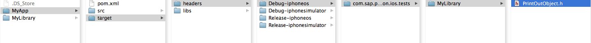
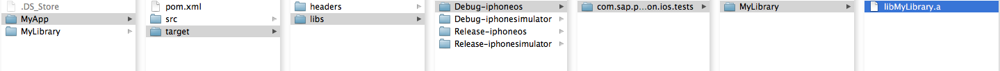
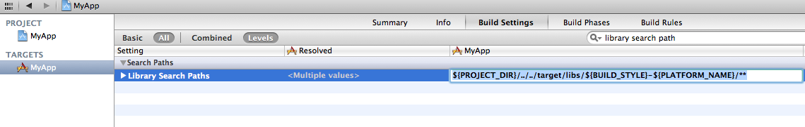
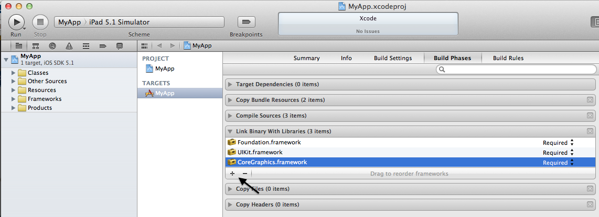
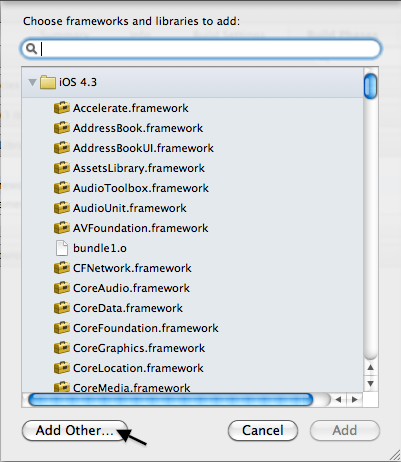
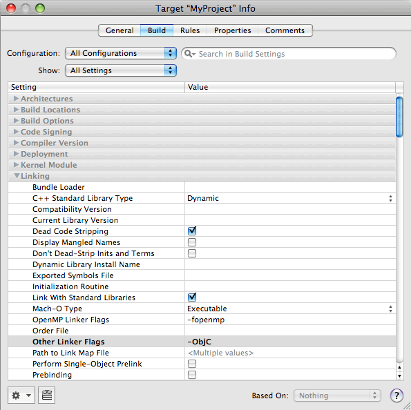

Consumption of Libraries
This is a step-by-step guide, describing the needed steps to reuse a library built with the Xcode Maven Plugin
1. Dependency Declaration
Your project specifies a dependency to the dependent library to use in the dependencies section of the pom.xml.
<dependency>
<groupId>com.sap.tip.production.prototype.xcodeprojects</groupId>
<artifactId>MyLib</artifactId>
<version>1.0.0-SNAPSHOT</version>
<type>xcode-lib</type>
</dependency>
2. Maven initialize
- Open a Terminal and go to the folder containing the pom.xml.
- Run the following command:
mvn initialize - After this execution a "target" folder is created in your
project folder, where all archives and headers from the dependent
projects are downloaded.


3. Define the Header and the Library Search Paths in XCode to point to those locations.
- Open XCode and navigate to Build Settings tab.

- Set the header search path (HEADER_SEARCH_PATHS) to:
"${PROJECT_DIR}/../../target/headers/${BUILD_STYLE}-${PLATFORM_NAME}/**"

- Set the library search path (LIBRARY_SEARCH_PATHS) to:
"${PROJECT_DIR}/../../target/libs/${BUILD_STYLE}-${PLATFORM_NAME}/**"

4. Link the library in XCode
Additionally you have to link the library in your XCode project as usual:
- Go to your default target > Build Phases > Link Binary
with Libraries > click +

- Click "Add Other..."

- Select one of the libraries from the path as already
mentioned above. Only the file name is relevant - according to the
library search path the relevant file with this name is searched.
5. Set Linker flag
Objective-C does not define linker symbols for each function (or method, in Objective-C) - instead, linker symbols are only generated for each class. If you extend a pre existing class with categories, the linker does not know to associate the object code of the core class implementation and the category implementation. This prevents objects created in the resulting application from responding to a selector that is defined in the category. Detailed information can be found here: https://developer.apple.com/library/mac/#qa/qa1490/_index.html
To resolve this issue, the target linking against the static library must pass the -ObjC option to the linker. This flag causes the linker to load every object file in the library that defines an Objective-C class or category.
- In Xcode, double-click the target's name under "Targets" in the Project window.
- Choose the Build pane from the ensuing Info window.
- Scroll down to the Other Linker Flags build setting under the
Linking collection and set its value to -ObjC.
